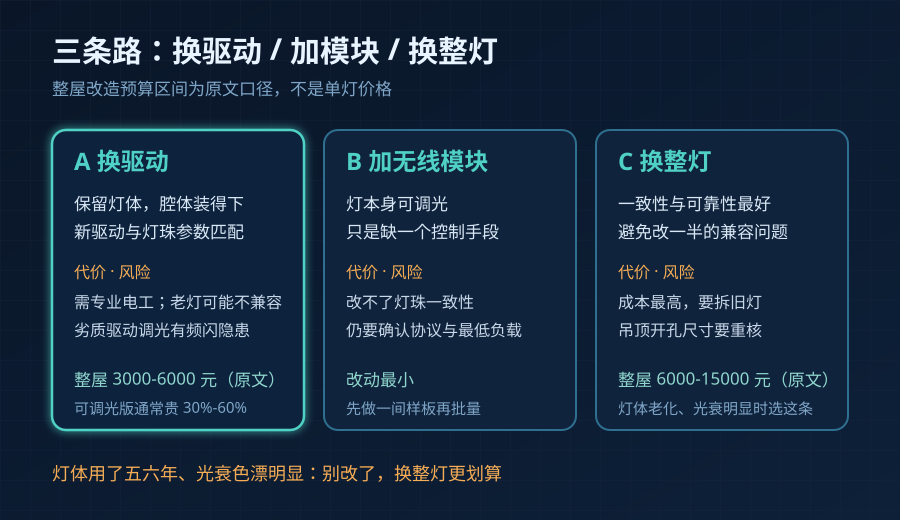
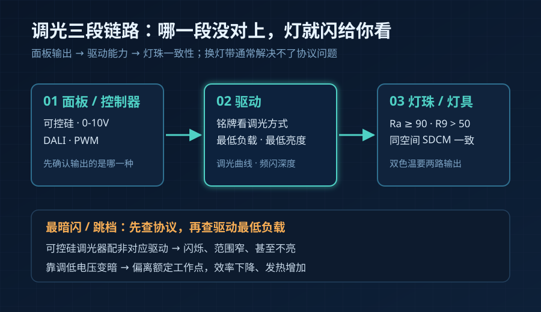

Picture an old-apartment renovation. The ceiling stays put. The downlights still come on, but the light has gone grey and harsh, with a faint flicker at night. The owner wants "smart lighting" and swaps the wall switches. The install finishes, the app connects, and the light still only goes on and off. No dimming.
A piece on China Home Appliances Network's smart home channel, "5 Ways to Upgrade an Ordinary Home to Smart Lighting," lists replacing the internal driver module as one way. It's framed for finished homes: no lamp replacement, no change to the look, ordinary downlights upgraded into something dimmable and linkable. But "can be swapped" and "worth swapping" are different sentences — that gap is where most projects go wrong.
Why the smart switch didn't do anything
Dimming authority sits with the driver; the LED just carries it out. A smart switch decides whether current flows, not how much.
Xundakang's checklist puts it bluntly — add a smart switch to an ordinary fixture and, in most cases, you don't get dimming. The switch handles on/off, not brightness. The China Home Appliances Network piece agrees that a smart switch is the budget-friendly first move in an old home, but it also flags the catch: the live-only (single-fire) version has load limits, some low-power LEDs will glow faintly when switched off, and you still only get on/off — no smooth dimming, no smooth color change.
One veteran installer, twenty years on job sites, put it this way: a lot of the money owners spend on switches buys a single feature — turning the light on and off from a phone. The part that decides whether that light can ever dim sits inside the fitting, untouched. If the driver was never built to receive a dimming signal, no wall switch, app, or hub will change that. This is a driver problem first, not a controls problem.
Three ways to get there

There are three realistic paths — swap the driver, add a wireless dimming module, or replace the whole lamp — and they are not the same project wearing different price tags.
Xinfanshen Lighting's breakdown is useful. Swapping the driver keeps the lamp body, but the new driver has to match the LED's parameters and fit in the cavity. A wireless dimming module makes sense when the lamp is already dimmable and only the control method is missing. Replacing the whole lamp gives the best consistency and reliability, because mismatched parts no longer have to cooperate.
On cost, the China Home Appliances Network article gives whole-home ranges — read that qualifier carefully, because these are not per-lamp prices:
- Swap the driver module: 3,000–6,000 yuan
- Replace with finished smart lamps: 6,000–15,000 yuan
- Replace with smart switches: 2,000–6,000 yuan
- Smart bulbs: 50–300 yuan
Xundakang adds that the dimmable version of the same fixture usually runs 30%–60% more than the non-dimmable one. Know that premium before assuming a like-for-like swap will be cheap.
| Path | When it fits | Cost and risk |
|---|---|---|
| Swap the driver | Lamp body is still young, cavity has room, parameters can be matched | Needs a qualified electrician; some older lamps won't accept it; a poor driver can bring flicker to the dimmed range |
| Add a wireless dimming module | The lamp is already dimmable, it just lacks a control method | Depends on the lamp's existing dimming ability; won't fix inconsistent LEDs |
| Replace the whole lamp | You want consistency and reliability | Higher cost, and the old lamps come out |
The middle option is often oversold. A module is not a universal adapter: if the LED has no dimming headroom, the module has nothing to work with.
The nameplate and the three-segment chain

Jiaxing Weidu IoT reads the system as three segments:
- Panel output signal — triac, 0-10V, DALI, or PWM.
- Driver supported range — minimum brightness, dimming curve, flicker depth.
- LED consistency — Ra, R9, SDCM.
All three have to line up. That order matters diagnostically. If the light flickers at its darkest setting or jumps in steps instead of gliding, check the protocol first, then the driver's minimum load. Replacing the LED strip alone won't solve it.
Then read the driver's housing label: 0-10V, DALI, triac, or a plain "dimmable" marking. As Xinfanshen points out, that label is only a starting point — the lamp body, driver, controller, and circuit all four have to match. Mix a triac dimmer from one brand with a driver it wasn't meant for and you get flicker, a narrow dim range, or a lamp that doesn't light. Often swapping the dimmer is cheaper than swapping every driver in the place.
Copy the Jiaxing Weidu spec into the purchase order: Ra ≥ 90, R9 > 50, and one color temperature per space. A dual-color-temperature strip needs a two-channel driver. Resist dimming by lowering the voltage — that pushes the LED off its rated operating point, so efficiency drops and heat goes up. It looks like dimming; it behaves like a slow failure.
Neutral wire, and when to walk away
The biggest trap in an old house is the switch box with no neutral. A live-only smart switch draws its own power through leakage current, and low-power LEDs glow faintly when they're supposedly off. A neutral-and-live setup is steadier, but older buildings often lack that wire. In one homeowner's record, re-threading the wire added 600 yuan to that item alone.
There's also a point where retrofitting stops being sensible. If the lamp body is five or six years in, with obvious light depreciation, color drift, and a rising failure rate, changing the driver just gives you a newer control system wrapped around a tired fitting. The same homeowner's record ends with no smart system at all: above Ra90, fixed 4000K, an ordinary rocker switch. The quotes they collected ran from 2,800 to 15,000 yuan — roughly a five-fold spread — and they finally paid 3,200. Fixtures accounted for about 40% of that; drivers, panels, and labor were the rest. A decent driver was 30–60 yuan each, and the low-price packages saved money exactly there: invisible on day one, troublesome about half a year later.
Keep the label on that story: one homeowner's case, not a market average. Read the numbers as a shape — where money goes and gets cut — not as a price list.
Eight checks before you sign off

Don't sign the handover before walking Jiaxing Weidu's eight items:
- No flicker at the darkest setting
- No step-jumping at the minimum
- Smooth transition across dual color temperatures
- No afterglow when the light is off
- No color difference across the wall-wash
- App and wall panel stay in sync
- State matches the preset after power is restored
- Local dimming still works with the network down
One more warning comes from an English-language source: don't mix dimmers with smart bulbs. A dimmer cuts the supply a smart bulb needs, causing flicker and dropouts; use an ordinary switch instead. Some symptoms aren't dimming problems at all — flicker at full brightness, a panel that heats or changes color, or every light blinking when a high-power appliance starts. Those are wiring problems. Get a licensed electrician, not a new driver.
The practical tactic is boring: buy one unit, or do one room, as a sample. Watch the darkest setting and check for step-jumping. Only then order the rest.
Three questions before you pay
Ask three things before money moves:
- Is the driver on the same dimming protocol as the panel?
- Where are the minimum load and the minimum brightness, specifically?
- Is the neutral actually in the box, and how much life is left in the lamp body?
If any of them comes back blank, stop there.
FAQ
How much do I really save by swapping only the driver? In the one homeowner's record above, fixtures were about 40% of the spend and the remainder went to drivers, panels, and labor. A driver-only swap saves the lamp body and the tear-out; it does not make the electrician's time disappear.
Can I retrofit just one room first? Yes. Do one room as a sample, check the darkest setting for flicker and step-jumping, then order the rest.
What matters during the electrical and carpentry stages? Jiaxing Weidu's advice: settle the circuits and back boxes during the electrical stage, and settle the driver's position during carpentry. If a protocol mismatch is discovered only when the fixtures arrive, you're looking at opening panels or cutting access hatches.
Getting a light on is easy. Keeping it steady when dimmed is the hard part. Watch the driver segment — it's more real than any switch you can put on the wall.